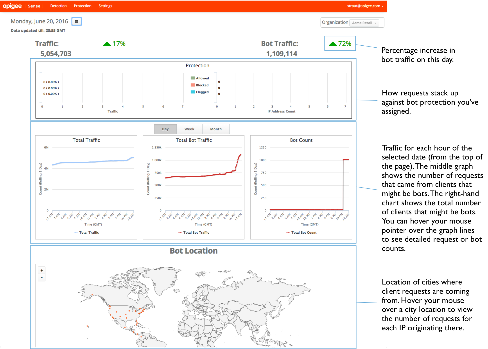
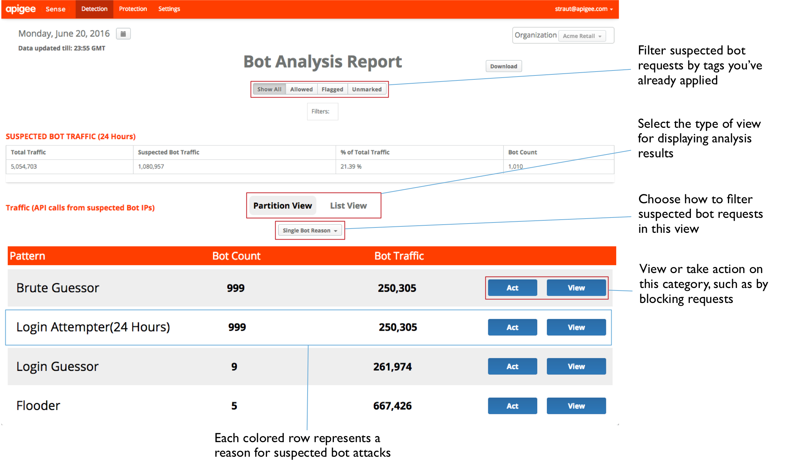
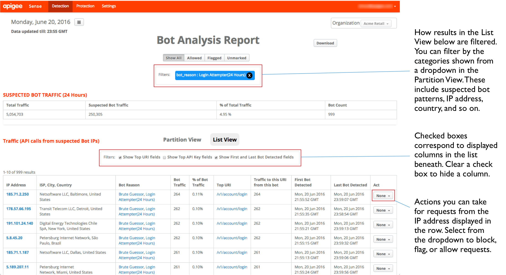
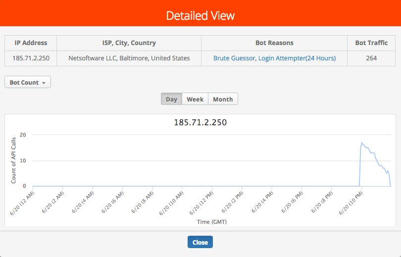
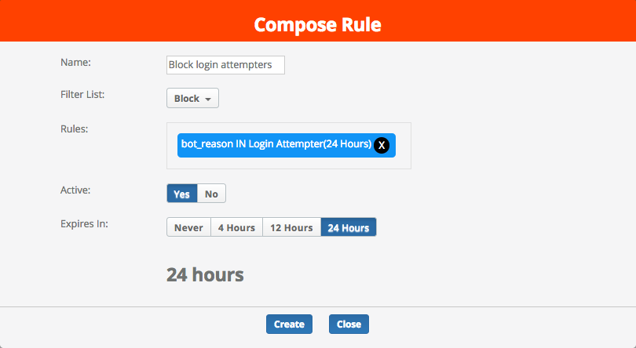
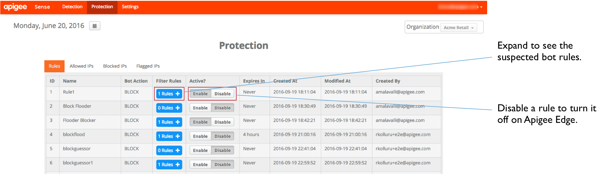

Getting started with the Apigee Sense Console
Use this topic to get an introduction to the Sense console. In the console, you can view the results of the Sense analysis of traffic to your API proxies. When you identify clients that are part of a bot attack, you can use the console to take action by blocking or flagging requests from that client's IP address.
As described in http://docs.apigee.com/node/22061, Sense collects and analyzes data about requests to your APIs. Through this analysis, Sense identifies patterns that might represent bot attacks. With the Sense console, you can view and act on request analysis results.
- To log in to the Sense console, go to the login page.
- On the Sense page, you'll see a graphical snapshot of request activity, including requests that might be from bots.
- In the upper-right corner of the console, select the Apigee Edge organization for which you want to view request data.
This is the organization containing API proxies for which Sense is collecting request data.
- In the upper-left corner, select a date for which you have Sense analysis data.
With a date selected, the graphs on this page provides a very high-level overview of Sense analysis, including request traffic from suspected bots.

View the bot analysis summary
You can get a high-level view of suspected bot activity. Using this, you can drill down for more detail.
- At the top of the page, click the Detection menu to view data about what kind of suspected bots were found among requests.
On the Detection page, the Suspected Bot Traffic table at the top summarizes the traffic, with bot-specific measurements.
The Detection page also provides two views of suspected bot activity.
- Partition View groups suspected bots by the reason Sense is presenting them as bots, but the country of request client, and by ISP of request client.
- List View lists the request clients by their IP address.
- In the Partition View, you can view traffic categorized into patterns that signify bot activity. (For more about patterns, see http://docs.apigee.com/node/22066. Request traffic grouped into these patterns is a product of Sense analysis of your request data.
Not all requests conforming to a pattern are bots. You're looking for very high bot count and/or traffic numbers.
For example, the Login Attempter pattern represents a large number of attempts to reach a login proxy in a 24-hour window. In the following image, a very high Bot Count number (relative to other patterns) indicates that a large number of clients are attempting -- in a single day -- to reach the login proxy. That makes this pattern worth investigating.

Investigate using analysis details
Once you've identified a set of requests that might comprise a bot attack, you can get a more detailed view of the requests. Isolating genuine bot attacks will require combining Sense analysis with your own knowledge of clients calling your APIs.
- In the Partition View on the Detection page, locate a pattern you're interested in -- such as one with a very high bot count -- and click its View button to see details about what the pattern represents.
Here, you have a drill-down view of activity conforming to the pattern you selected. There are a few noteworthy pieces of data from the list shown here:

- There's a large number of IP addresses -- almost a thousand in 24 hours.
- There's a comparatively small number of ISPs behind those IPs -- ISPs that are widely distributed, geographically.
- The bot traffic count is pretty consistent at around 250 - 260 each across IPs. This is represented also by the % of bot traffic measurement.
Taken together, this information suggests that requests from these IPs represent a coordinated, mechanized attack on the login URI.
- To view even more detail about a single client, click one of the IP addresses in the left column.
- In the Detailed View dialog, on the left side, click the dropdown and select a category to further filter requests.

Use the categories in the dropdown to decide whether the requests coming from an IP address should be handled as bot by Apigee Edge. For example, the following value categories can help you figure out whether the IP address represents a bot:
- Response status code. A list dominated by a high number of error codes such as 500 suggests a client trying repeatedly with the wrong request. In other words, a client that's simply sending the request repeatedly without being aware of an error result.
- Request URI. Some URI are especially significant as attack points. A login URI is one of them.
After you've confirmed that an IP likely represents a bot, you can act to prevent further attacks.
- In the Detailed View, click the Close button.
Take action against bots
Confident you've got a bot attack on your hands? Compose a rule to block or flag the attackers from Apigee Edge -- before the request reaches your proxies.
- On the Detection page, in the Bot Analysis Report, click the Partition View tab to go back to viewing the pattern list.
In the Partition View, note that the pattern list has been shortened to include only the pattern you selected to view earlier. That's because when you selected to view the pattern, you began filtering the full list of results to only that pattern. The patterns you're filtering for are shown in the Filters box near the top of the page.
- In the row for the pattern, click the Act button to specify an action to take for requests from IPs that match the pattern.
- In the Compose Rule dialog, define how Apigee Edge will respond to requests from IPs making calls in the pattern you selected.

Here, you'll specify a rule that Apigee Edge uses when requests are received from an IP in the pattern.
- Enter a name for the new rule, such as
Block login attempters.
- In the Filter List, select the action you want Apigee Edge to take:
- Allow the request to proceed into your proxy as before.
- Block the request completely before you proxy begins to process it.
- Flag the request by having Apigee Edge add a special HTTP header that your proxy can look for. Apigee Edge will add an
X-SENSE-BOT-DETECTED header with a value of SENSE.
For example, you might want to set up your proxy so that when you receive a request from a client you've identified as a bot, you can send back dummy data to mislead them. In your proxy, you'd examine the headers of incoming requests, then respond appropriately when a flagged request is received.
- In the Rules box, confirm that the rules displayed are those you want Sense to use when creating the rule.
- For Active, select Yes to turn the rule on.
- Select a period after which you want the rule to expire (for Apigee Edge to stop enforcing it).
- Click Create to send the rule to Apigee Edge.
Review rules you've created
If you've acted to put rules in place to respond to bots, you can manage the rules on the Protection page.
- At the top of the page, click the Protection menu to see a list of the rules you have in place.

- In the Rules tab, you can view the list of rules you've created. From here you can:
- View the details of a rule, or find out which IPs you're taking action on.
- Click a value in the Filter Rules column to see what makes up the rule there.
- Enable or disable rules.